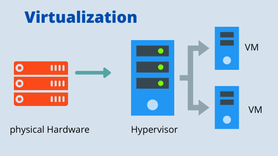

Docker Basics
what is virtual machine and its advantage?
virtual machines needs a physical resources to function. it has the CPU ,
memory , file storage , mouse keyboard etc and the ability if required to
connect to the internet
what is virtualization ?
virtualization is the process of simulating the the hardware and software
in the virtual(software) environment

In the Above diagram hypervisor is the software that is used to perform the virtualization
by managing the system resources the VM’s
Suppose consider a example we have servers one is email server, another one webserver another one internal server each server is running on different system
and different operation system like linux,windows and unix etc in traditional architecture
but in virtualization we can run all three server of different os in same system using virtualizationusing hypervisor technology
types of hypervisor
- bare metal hypervisor and it is the type one hypervisor where the
the hypervisor is built on top of
baremetalsystem like the system with noos - next one is type 2 hypervisor where the hypervisor is built on top of operating system
advantages of the virtual machines
- cost efficiency
- portability - the
vm’sin the machine can easily transferred to another machines - fault tolerance -
vmare just stored in the file which can be recovered easily
Disadvantage of Virtual machines
- occupies of lot of disc space
- consumes lot of RAM and consumes more power by server from
cpu
What is Container?
The container is the contains the applications with all necessary files packages and environment variables like container is bundled with all the necessary files to run the application , it consist of application configuration libraries and all dependencies to run the application
container is the instance of the image , isolated from each other , with their own environment
What is Docker ?
docker is a software platform that uses the os level virtualization to create a self contained containers, you may have created several virtual machines using oracle VM or any other VM's , docker is like but with better performance .
In Docker we select a image and download it and create a one or more instance or
containers , pretty similar to creating virtual machines
what is Image ?
A package or template used to create one or more containers